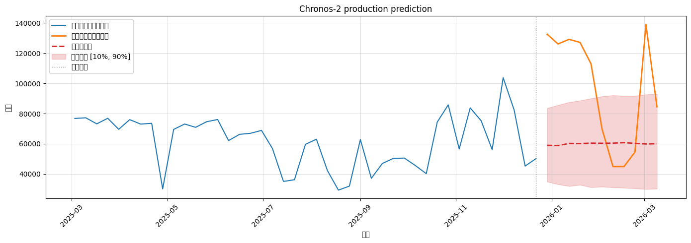

产量预测示例
import os
os.environ["CUDA_VISIBLE_DEVICES"] = "0"
import pandas as pd
import numpy as np
import matplotlib.pyplot as plt
from chronos import BaseChronosPipeline, Chronos2Pipeline
pipeline: Chronos2Pipeline = BaseChronosPipeline.from_pretrained("amazon/chronos-2", device_map="cpu")
df = pd.read_csv("data/production_weekly.csv")
print("数据维度:", df.shape)
display(df.head())
chronos_df = pd.DataFrame({
"item_id": "P",
"timestamp": df["日期"],
"target": df["产量"].astype(float),
})
chronos_df = chronos_df.sort_values("timestamp").reset_index(drop=True)
print("Chronos-2 输入数据维度:", chronos_df.shape)
display(chronos_df.head())
数据维度: (54, 2)
|
日期 |
产量 |
| 0 |
2025-03-03 00:00:00 |
76760 |
| 1 |
2025-03-10 00:00:00 |
77208 |
| 2 |
2025-03-17 00:00:00 |
73200 |
| 3 |
2025-03-24 00:00:00 |
76888 |
| 4 |
2025-03-31 00:00:00 |
69584 |
Chronos-2 输入数据维度: (54, 3)
|
item_id |
timestamp |
target |
| 0 |
P |
2025-03-03 00:00:00 |
76760.0 |
| 1 |
P |
2025-03-10 00:00:00 |
77208.0 |
| 2 |
P |
2025-03-17 00:00:00 |
73200.0 |
| 3 |
P |
2025-03-24 00:00:00 |
76888.0 |
| 4 |
P |
2025-03-31 00:00:00 |
69584.0 |
context_ratio = 0.8
split_index = int(len(chronos_df) * context_ratio)
context_df = chronos_df.iloc[:split_index].reset_index(drop=True)
test_df = chronos_df.iloc[split_index:].reset_index(drop=True)
print(f"上下文（前 {int(context_ratio*100)}%）：{len(context_df)} 行，测试集（后 {int((1-context_ratio)*100)}%）：{len(test_df)} 行")
print("上下文示例:")
display(context_df.head())
print("测试集示例:")
display(test_df.head())
上下文（前 80%）：43 行，测试集（后 19%）：11 行
上下文示例:
|
item_id |
timestamp |
target |
| 0 |
P |
2025-03-03 00:00:00 |
76760.0 |
| 1 |
P |
2025-03-10 00:00:00 |
77208.0 |
| 2 |
P |
2025-03-17 00:00:00 |
73200.0 |
| 3 |
P |
2025-03-24 00:00:00 |
76888.0 |
| 4 |
P |
2025-03-31 00:00:00 |
69584.0 |
测试集示例:
|
item_id |
timestamp |
target |
| 0 |
P |
2025-12-29 00:00:00 |
132528.0 |
| 1 |
P |
2026-01-05 00:00:00 |
126072.0 |
| 2 |
P |
2026-01-12 00:00:00 |
129120.0 |
| 3 |
P |
2026-01-19 00:00:00 |
127088.0 |
| 4 |
P |
2026-01-26 00:00:00 |
112912.0 |
pred_df = pipeline.predict_df(
context_df,
prediction_length=len(test_df),
quantile_levels=[0.1, 0.5, 0.9],
)
print("预测结果维度:", pred_df.shape)
display(pred_df.head())
item_id = "P"
ts_context = context_df.query("item_id == @item_id").set_index("timestamp")["target"]
ts_context.index = pd.to_datetime(ts_context.index)
ts_test = test_df.query("item_id == @item_id").set_index("timestamp")["target"]
ts_test.index = pd.to_datetime(ts_test.index)
ts_pred = (
pred_df
.query("item_id == @item_id and target_name == 'target'")
.set_index("timestamp")[["0.1", "predictions", "0.9"]]
)
plt.figure(figsize=(14, 5))
plt.plot(ts_context.index, ts_context.values,
label="历史产量（上下文）", color="C0", linewidth=1.5)
plt.plot(ts_test.index, ts_test.values,
label="真实产量（测试集）", color="C1", linewidth=2)
plt.plot(ts_pred.index, ts_pred["predictions"].values,
label="预测中位数", color="C3", linewidth=2, linestyle="--")
plt.fill_between(
ts_pred.index,
ts_pred["0.1"].values,
ts_pred["0.9"].values,
color="C3",
alpha=0.2,
label="预测区间 [10%, 90%]",
)
plt.axvline(x=ts_context.index[-1], color="gray", linestyle=":", linewidth=1,
label="预测起点")
plt.title("Chronos-2 production prediction")
plt.xlabel("日期")
plt.ylabel("产量")
plt.grid(True, alpha=0.4)
plt.legend(loc="upper left")
plt.xticks(rotation=45)
plt.tight_layout()
plt.show()
预测结果维度: (11, 7)
|
item_id |
timestamp |
target_name |
predictions |
0.1 |
0.5 |
0.9 |
| 0 |
P |
2025-12-29 |
target |
58995.824219 |
34919.710938 |
58995.824219 |
83553.453125 |
| 1 |
P |
2026-01-05 |
target |
58805.308594 |
33160.871094 |
58805.308594 |
85602.609375 |
| 2 |
P |
2026-01-12 |
target |
60251.898438 |
31974.251953 |
60251.898438 |
87503.710938 |
| 3 |
P |
2026-01-19 |
target |
60151.320312 |
32848.054688 |
60151.320312 |
88616.085938 |
| 4 |
P |
2026-01-26 |
target |
60422.605469 |
31210.833984 |
60422.605469 |
89999.429688 |

发现预测结果非常不准，原因是：
1. 样本未包含数据波动较大的春节期间的数据，看起来春节期间设备产量更高
2. 数据几乎没有按照时间变化的规律，导致预测结果是一条水平线